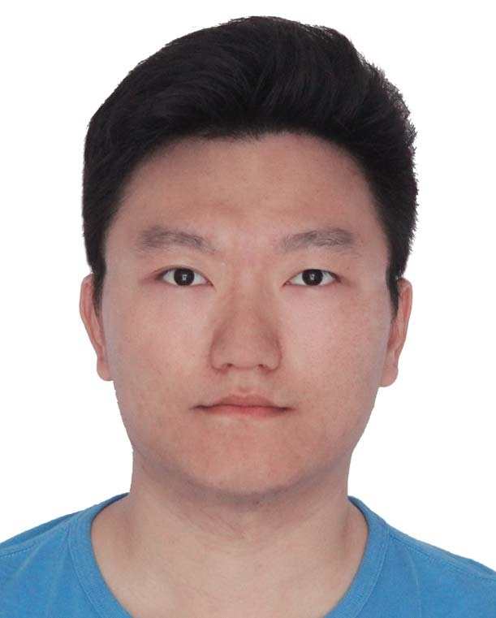

I am an Associate Professor at Sun Yat-sen University. Previously, I worked as a Post-Doctoral Researcher at Sun Yat-sen University in Guangzhou, China. My research interests include Computer Vision, Machine Learning, AI4Neuroscience and Neuroscience4AI. More recently, I am also interested in more higher-level cognitive tasks (e.g., abstract visual reasoning).
News
[2026.07.27 🎓] –
I have been invited to serve as a Senior Program Committee (SPC) member for AAAI 2027.
[2026.07.10 🎉] –
Two of our recent papers have been accepted by ACM MM 2026.
Congratulations to all the authors !
[2026.07.06 🎉] –
Two recent papers on
vision-language model adaptation and self-supervised concept learning
have been accepted by T-PAMI (code: VLM-MMApp)
and Science Advances, respectively.
Congratulations to all the authors !
[2025.12.02 💻] –
Codes for our recently accepted
T-PAMI and ICCV papers are now available:
AVR-PredRNet and
FreeCP.
[2025.10.25 🎉] –
Our paper,
"Neural Prediction Errors as a Unified Cue for Abstract Visual Reasoning",
has been accepted by T-PAMI.
This work extends our previous
PredRNet (ICML 2023)
by introducing prediction errors as a unified cue for abstract visual reasoning.
The preprint is available
here.
[2025.07.08 🎉] –
Our paper on open-vocabulary semantic segmentation has been accepted by
ICCV 2025.
Congratulations to Qi Chen !
[2025.05.05 🎉] –
Our SSLvMB code
for RPM-like abstract reasoning is released for submission purposes.
[2025.05.04 🎉] –
Our paper on sky-ground re-identification has been accepted by
T-MM.
The code and newly designed dataset will be released soon.
[2025.04.11 🎉] –
Our paper on multi-view clustering has been accepted by
T-NNLS.
[2025.01.06 🎉] –
Our paper,
"Learning with Enriched Inductive Biases for Vision-Language Models",
has been accepted by IJCV.
This work proposes enriched inductive biases for more effectively adapting vision-language models.
[2024.10.12 🎓] –
I am pleased to join the
School of Systems Science and Engineering, Sun Yat-sen University
as an Associate Professor. Feel free to contact me if you are interested in our reserach.